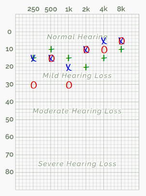
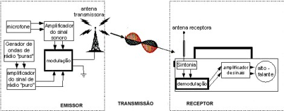
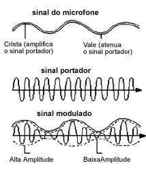
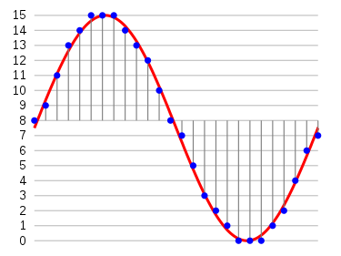

Seminário 2
Parte 1 - Testes de Acuidade Visual na Comunidade Externa:
Para a realização do teste, foi utilizado o site https://hearingtest.online/ todos os membros da equipe devem realizar
em si mesmo o teste de audiometria num computador/notebook com saída de som satisfatório. No estudo em questão foram medidos os áudiso da comunidade externa
Aqui temos os resultados de audiomatria segregados por idade, onde em verde temos o resultado com o som sendo emitido em duas orelhas, azul somente no lado esquerdo e vermelho somente o lado direito.
Publico de 21 a 25 anos: Apresentou uma compensação em um dos lados de emissão do som, no entanto se manteve entre a audição normal até a audição leve

Publico de 26 a 30 anos: No geral foi possível notar uma perda de audição leve, com compensações de acordo com a frequência emitida. Por exemplo, na primeira imagem temos o audiograma da integrante Beatriz a qual apresentou uma audição melhor em até 1kHz sendo realizadas pelo lado esquerdo e acima disso, pelo lado direito.
Publico de 31 a 35 anos:Houve uma perda leve de audição, compensada pelo ouvido direito.
Publico de 36 a 40 anos: Observa-se uma leve perda de audição. Há uma compensação pelo ouvido esquerdo na faixa dos 2 KHz
Parte 2 - Desenvolvimento de Projeto de Audio/Voz :
Descrição
Rádio
Surgindo em 1896, podemos concentrar o mesmo como modelo de sistemas de transmissão da informação, o canal é responsável por fazer a ligação entre o transmissor e receptor; e pode ser do tipo não guiado, como a atmosfera, ou do tipo guiado, como os cabeamentos.
Com isso, a modulação define-se por uma técnica de conversão de sinais para fins de transmissão, a qual recebe duas entradas, informação e portadora, e fornece um sinal de saída para o transporte da informação. A modulação tem por características a redução de ruído, de interferências e a facilidade de irradiação eletromagnética. Já a demodulação se dá pelo processo inverso da modulação, onde sua finalidade é recuperar a informação no receptor de destino.

Nós temos dois tipos de modulação. Na modulação de amplitude (AM), a onda de rádio portadora é gerada com amplitude e freqüência constantes. Depois disso, a onda portadora é modificada pela introdução de uma onda, proveniente do microfone. As variações de amplitude da onda proveniente do microfone ficam, então, “impressas” sobre a onda portadora. O processo de produção do sinal que é efetivamente enviado pela antena transmissora é chamado modulação. As estações emissoras de ondas de rádio que se utilizam da modulação de amplitude para transmitir informações são chamadas de estações de rádio AM (ou Amplitude Modulada).
No caso das emissões de FM, o sinal modulador interfere na produção do sinal portador produzindo variações em sua frequência. A modificação na frequência da onda portadora é determinada tanto pela amplitude quanto pela própria freqüência do sinal proveniente do microfone. O sinal resultante ou “sinal modulado” é diferente do que se obtém na modulação do tipo AM. Na modulação FM o sinal modulado apresenta uma amplitude constante.
tanto na modulação por amplitude quanto na modulação por freqüência, os sinais elétricos provenientes do microfone têm freqüência muito menor que a freqüência do sinal portador.
A enorme diferença entre as freqüências do sinal portador e do sinal modulador é importante, pois facilita a “separação” desses dois sinais pelo aparelho receptor. Essa “separação” ou decomposição recebe o nome de demodulação. Com a demodulação, o sinal modulador produzido pelo microfone do locutor, lá na estação emissora de rádio, pode ser amplificado e conduzido ao alto-falante do aparelho receptor.


Além da codificação de fonte, temos a codificação de canal, também chamada de detecção e correção de erros, que é a codificação de sinais de informação que diminuem a taxa de erro de bit no canal de transmissão.
São dois os tipos de códigos corretores e detectores de erros: código de bloco e código cíclico/convolucional. A potencialidade desses códigos foi instituída a partir do Teorema da Codificação de Shannon, para um canal ruidoso:
“Para qualquer canal sem memória, cuja entrada é um alfabeto discreto, existem códigos com taxa de informação R (nats/símbolo), com palavras de comprimento n dígitos, para os quais a probabilidade de erro, para o caso de decodificação por máxima verossimilhança, é limitada por Pe < e1-nE(R), em que E(R)>0, 0≤R
CD
O CD é uma mídia de armazenamento de música, que surge, principalmente, para substituir os discos de Vinil na indústria fonográfica.
Os primeiros Projetos que originaram essa mídia surgem na década de 70, em uma parceria entre as empresas Phillips e SONY.


Referências:
A. J. Viterbi, "When Not to Spread Spectrum - A Sequel". IEEE Communications Magazine, 23(4):12-17 (1985).